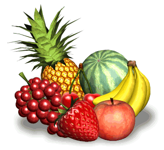
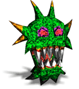
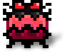

Aunque
Kubi está indefenso en la generación de 4 bits, puede llevar a
cabo un ataque especial a partir de los niveles de 8 bits que
dejará fuera de combate a cualquier monstruo próximo. Este
ataque no solo salva a Kubi de situaciones límite, sino que
también le da muchos puntos extra.
¡El número de ataques
especiales es limitado!
Frutas
Muchas deliciosas frutas se
hallan ocultas en cada nivel, y aparecen una después de otra en
distintos momentos.
Cada fruta que Kubi coma subirá su nivel
de vitaminas y su puntuación.

Monstruos

Cada nivel está poblado de malvados monstruos, que tienen
cautivos a tus pobres amigos
Bit Boys.
Por suerte, los monstruos no son muy listos, y por eso nunca
saben exactamente dónde encontrarte.
¡Pero ten cuidado, porque perderás una vida cuando choques con
uno de ellos!
Vidas y Continue
Cuando
pierdas una vida, pasarás de inmediato al punto en el que te
alcanzó el monstruo, mientras que el resto de monstruos volverán
a sus posiciones. Los amigos a los que ya has salvado seguirán a
salvo.
Si pierdes todas las vidas,
elige “Continue” para volver a jugar el nivel.
Una vez hayas salvado a todos
los amigos
Bit Boys, seguirás atrapado en el nivel en cuestión durante 5
segundos más.
¡Usa ese tiempo para recoger más frutas,
pero mantente bien alejado de los monstruos!